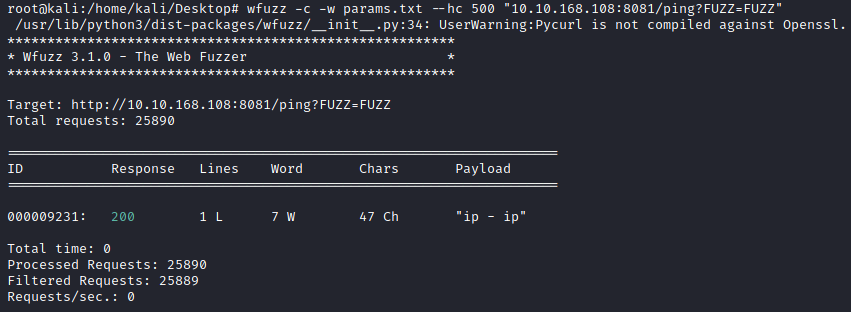

wfuzz
wfuzz
Github: https://github.com/xmendez/wfuzz
Installation
To install WFuzz, simply use pip:
pip install wfuzz
docker run -v $(pwd)/wordlist:/wordlist/ -it ghcr.io/xmendez/wfuzz wfuzz
Hiding Responses(source) options:
The following command line parameters can be used to hide certain HTTP responses
• --hc → Type of the response (example: 404,403,...)
• --hl
• --hw → Number of word in the response
• --hh → Number of characters in the response
Run It:
0. Download a wordlist of parameters
attacker@kali# wget https://raw.githubusercontent.com/s0md3v/Arjun/master/arjun/db/params.txt
1. Identify the responses to hide
attacker@kali# wfuzz -c -w params.txt "example.com/[file]?FUZZ=FUZZ"
In this example we are interested to Responses==200, so to hide the others we could use one of the options:
--hc 500
--hl 10
--hw 61
--hh 1094
2. Fuzz the parameters and hide the response to which we are not interested
attacker@kali# wfuzz -c -w params.txt --hc 500 "example.com/[File]?FUZZ=FUZZ"-f [filename] → store the output in this file
-c → Output with colors
-w [wordlist] → Specify a wordlist file
-hw [number] → important to eliminate all the results that we are not interested in. Number of word in the response

Possible errors:
Against Https (SSL) sites wfuzz can give error “UserWarning:Pycurl is not compiled against Openssl" and “Bad usage: You must specify an URL”
In this scenario see how resolve in this document https://buildmedia.readthedocs.org/media/pdf/wfuzz/latest/wfuzz.pdf chapter “3.2.3 PyCurl SSL bug”
For POST requests
https://wfuzz.readthedocs.io/en/latest/user/basicusage.html#fuzzing-post-requests
wfuzz -z file,wordlist/others/common_pass.txt -d "uname=FUZZ&pass=FUZZ" --hc 302 http://testphp.vulnweb.com/userinfo.php